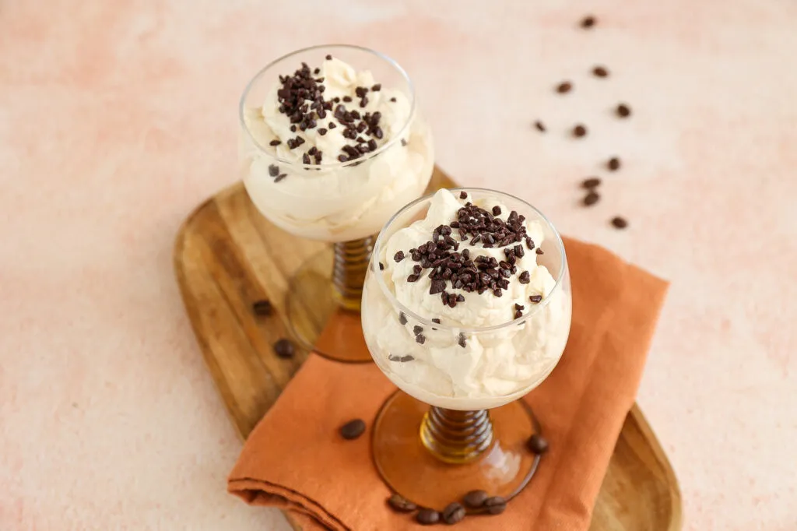

koffiemousse

Ingredienten
- 250 ml slagroom
- 25 gr poedersuiker/li>
- 50 ml espresso
- geraspte chocolade of mokka boontjes
Bereiding
- Zet een espresso. Laat de espresso even afkoelen in de koelkast.
- Klop de slagroom op met de poedersuiker (met een elektrische mixer).
- ls de slagroom stijf is, voeg je de koffie toe en meng je dit kort nog even door elkaar met de mixer.
- Verdeel de koffie mousse over 3 glazen en maak af met wat geraspte chocolade, mokka boontjes of hagelslag.